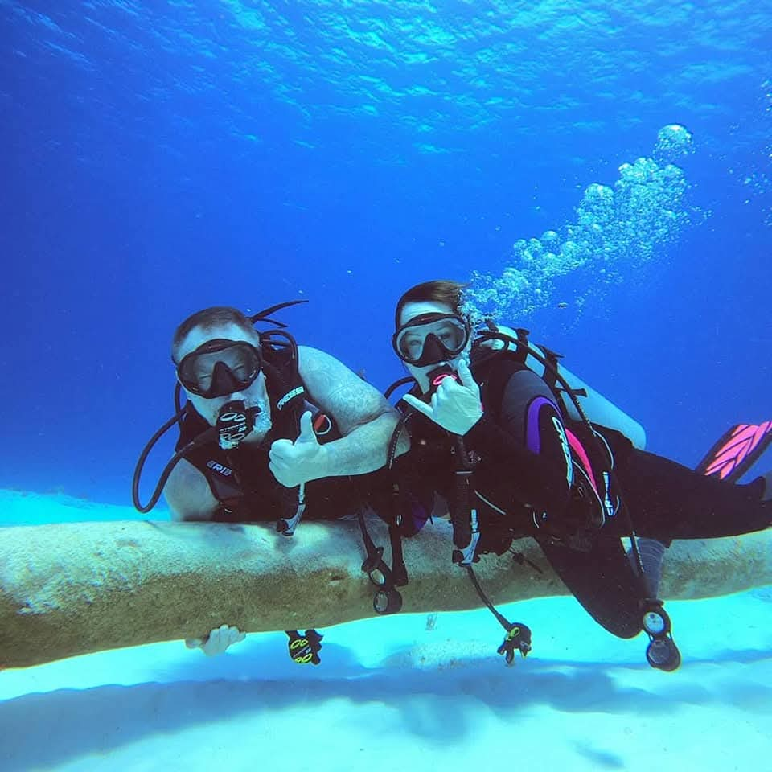

El curso Advanced Open Water es la mejor manera de mejorar tus habilidades de buceo y explorar nuevos lugares. No tienes que ser un experto; el curso está diseñado para que ganes confianza y te diviertas en el agua.
Consta de 5 inmersiones de aventura. Incluye dos inmersiones obligatorias:
Y puedes elegir 3 inmersiones más entre una variedad de opciones, como:
Requisitos: Tener la certificación PADI Open Water (o equivalente) y al menos 12 años.